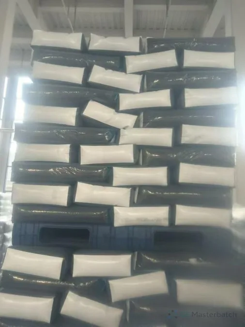

Technical Documents
Request Masterbatch Technical Documents
Request review of technical or compliance-related documents for a specific black or desiccant masterbatch inquiry. Availability is checked by grade, application, country and intended use.
GE CHEMICAL & POLYMER GROUP CO., LTD reviews each request by product interest, product grade, application, country or region and document scope before replying by email.

Document review
When buyers need document review
Technical documents may be needed for internal evaluation, customer approval, import review, compliance discussion or sample testing. The same document type does not necessarily apply to every product or grade.
Common request situations include:
- A distributor needs documents for customer review.
- A packaging or plastic product factory needs technical data before sample discussion.
- A buyer needs SDS/MSDS or COA information for internal evaluation.
- A customer asks whether RoHS-related, FDA-related or food-contact-related documents can be reviewed for a specific inquiry.
Request preparation
Information to prepare before requesting documents
- 01
Product interest: black masterbatch, desiccant masterbatch or not sure.
- 02
Product grade or model, if known.
- 03
Application or final plastic product.
- 04
Base resin, such as PE, PP, LDPE, LLDPE, HDPE, ABS, PET, PVC or another resin.
- 05
Processing method, such as film blowing, injection molding, extrusion or re-granulating.
- 06
Country or region where the product or document will be used.
- 07
Required document type.
- 08
Document purpose, such as internal evaluation, customer approval, import clearance, compliance review or sample testing.
- 09
Current grade, previous supplier grade or customer standard that should be reviewed.
How requests are handled
How document requests are handled
Documents are requested by form and reviewed manually. This website does not publish or automatically deliver technical files after submission.
The review considers:
- Product interest.
- Product grade or model, if known.
- Application.
- Base resin and processing method.
- Country or region.
- Requested document type.
- Intended use of the document.
If suitable documents are available, the team replies by email after review.
Compliance-related boundaries
Compliance-related document boundaries
Compliance-related documents, if available, apply only to specific tested grades or samples. A request for an FDA-related, food-contact-related or RoHS-related document does not imply that every product or grade is covered.
Not every product has every document. Public page copy cannot confirm document availability before the exact grade and application are reviewed.
Before you submit
Before you submit
Share the exact product direction and application context you have. If the grade is unknown, provide the resin, process, final product, country and document purpose so the team can identify the right review path.
The form below asks for the required document type and purpose. Submitting a request does not approve a product, price, quantity, sample, delivery date or document request.